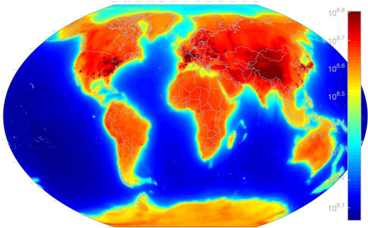

The main place neutrinos are found is in the procesess of beta decay. This is part of radioactive decay when a neutron decays into a proton and electron
and an electron neutrino. occuring in unstable elements this then happens in neuclear reactors as a bi-product as when a neutron comes incontace with anouther
neucleaus it causes said neucleaus to break apart into smaller elments , in turn decay occurs releasing neutrinos.
Fun Fact!
did you know due to the radioactive decay of potasium, bananas emit neutrinos
Every time atomic neucli come together or break apart, they produce neutrions . This is not only why neuclear reactors produce neutrinos but also why particle accelerators
and the sun produce neutrions. In the case of the particle acceerator, due to the idea that two hydrogen nuclei get sped up and smashed into each other, it causes the production of neutrinos.
And for the sun and otehr stars, they high and dense nature of them means that plasm is formed which consitst of nuclei and electrons free flowing , which in turn means that they colide.
this is a map of neutrino radiation
